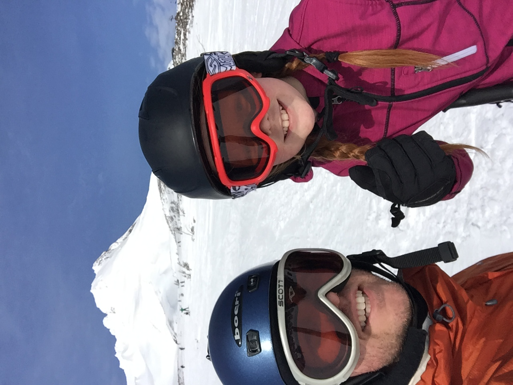

Hi, we are Steve and Megan Oliver. We live in the North Clackamas School district and have a 4th grader and a 7th grader in the Putnam feeder area. In addition, Steve has worked at middle schools in the Clackamas feeder for 12 years and Megan taught at Rowe Middle School for 13 years.
We've always loved the outdoors and skiing and snowboarding are favorite winter activities. We started running a ski bus last year with 12 kids and had a blast. We can't wait to do it again this year!
The ski bus is operated through Mt. Hood Meadows and is not associated at all with the North Clackamas School District. Families follow the links below and sign their kids up the age-appropriate program. Prices will vary depending on whether you need to rent equipment, need tickets, etc. You sign up through Mt. Hood Meadows, using our links below, and then you are added to our list.
On Sundays in February we meet early in the morning at Sunnyside Elementary School, hop on the bus, and head up the mountain. We usually leave the mountain around 3:30 and arrive back at the school around 5 (depending on weather). We will have a group text and send updates along the way. Please do everything in your power to be on time to pick your kids up. We won't leave until they're all picked up.
Please see below for information on the 2 different programs, based on the age of the student.
The Snoblasters program is for students in 1st-5th grade. In the morning these students are escorted by Steve or Megan from the bus into the snoblasters room where they are checked in and handed off to their instructor. If they are renting equipment, their instructor will take care of it. Students do a morning lesson from 10am-12pm, then get an hour for lunch in the supervised Snoblasters room. In the afternoon, students take part in a second lesson from 1pm-3pm. After that lesson, either Steve or Megan will come to the room and check out our students and take them back to the bus. Students in the Snoblaster program are supervised ALL DAY. The Snoblaster room is secure and kids can leave bags there while they're out skiing.
Steve and Megan will be out skiing for most of the day. In the unlikely event that anything happens to a student from our bus, an alert is put on our passes and we will be informed as to what happened the next time we're scanned to get on a lift. We will then head over to check in on that child and make sure everything is ok.
Once we have the link to sign up for snoblasters, we will post it here.
The Trailblazers program is for students in 6th-8th grade. This program is a bit more independent than the Snoblasters program, but Steve and Megan are always around the lodge in the morning and afternoon to help if needed.
When we arrive in the morning, the students head up to the lodge area. If they already have their own equipment, they are welcome to take a run or two before lessons begin if they have time (they usually do). If they need to rent equipment, they head straight into the rental area and get what they need. At 10am students need to be in the lesson area ready to go. Lessons are 2 hours, from 10am-12pm. After the lesson, kids are on their own for the rest of the day. They can eat lunch in the lodge and then head out on their own, or with friends, to ski for the rest of the day. Everyone needs to be back at the bus by 3:15 so we can leave on time.
This program is pretty independent. Steve and Megan will help everyone the first week to figure out where to go. After that, we'll still be around the lodge area until lessons begin, but kids usually get the routine down pretty quick and don't need our help.
Steve and Megan will be out skiing for most of the day. In the unlikely event that anything happens to a student from our bus, an alert is put on our passes and we will be informed as to what happened the next time we're scanned to get on a lift. We will then head over to check in on that child and make sure everything is ok.
Once we have the link to sign up for trailblazers, we will post it here.